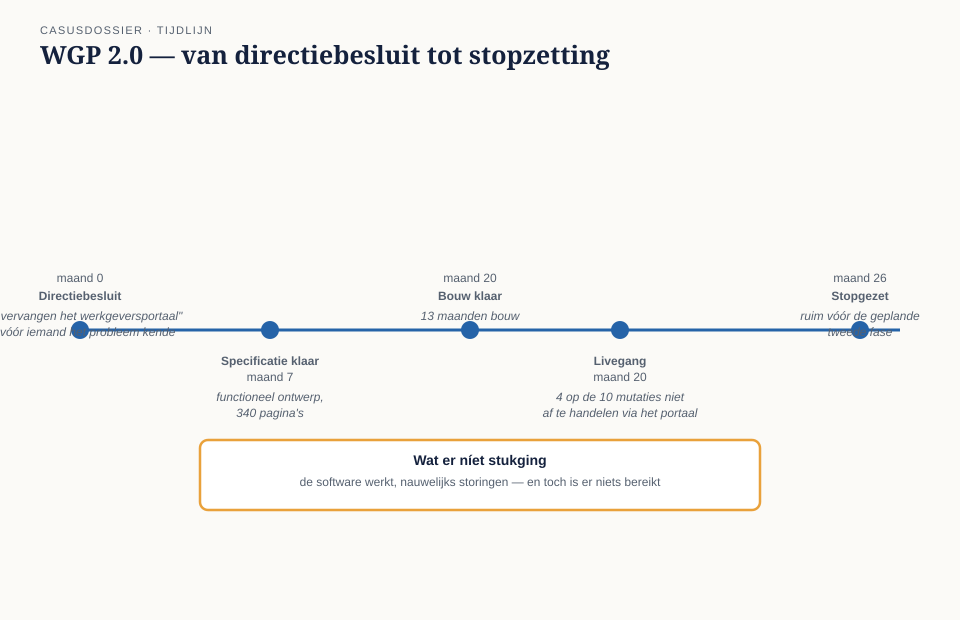
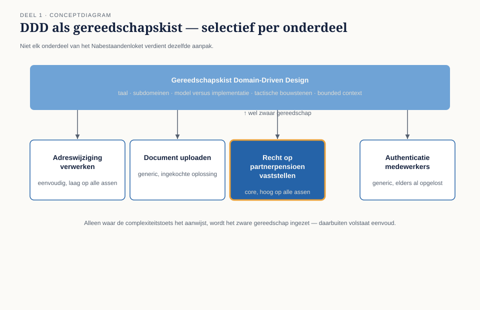
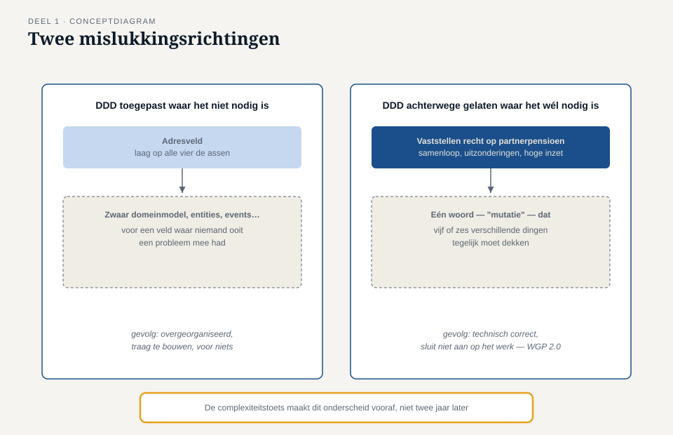

Deel 1 — Wat DDD is, en wanneer je het niet nodig hebt
Slidedeck · Ductus-cursus Domain-Driven Design · niveau 1 · deel 1 van 30 · 29 slides
Slide 1 — Titel
Domain-Driven Design — deel 1 Wat DDD is, en wanneer je het niet nodig hebt Niveau 1: fundament · voorbereiding op de iSAQB Advanced-module DDD
Slide 2 — Voordat we beginnen
Deze cursus bereidt voor op de iSAQB Advanced-module Domain-Driven Design. Zij vervangt geen erkende training en levert zelf geen certificaat op. De module levert credit points voor CPSA-Advanced Level (CPSA-A). Alle formuleringen en figuren hier zijn van Ductus.
Slide 3 — Een vraag om mee te beginnen
Een team bouwt een systeem met precies de patronen uit het boek. Aggregates. Domain events. Bounded contexts. Het complete instrumentarium.
Het onderdeel dat ze bouwen is een lijstje met vijf velden dat nooit verandert.
Wat is hier misgegaan?
(Antwoorden op de flap. We komen er in deel 10 op terug.)
Slide 4 — Waar we het over gaan hebben
- Wat Domain-Driven Design is — en wat niet
- Waarom DDD een investering is, geen standaardaanpak
- De complexiteitstoets: wanneer wél, wanneer niet
- Daans eerste week bij het Nabestaandenloket
Slide 5 — De casus
Meridiaan Pensioen · 1,2 miljoen deelnemers Na WGP 2.0: voorzichtig, maar het Nabestaandenloket moet goed komen Daan Kuiper — net binnen, kent de code, niet het domein

Slide 6 — WGP 2.0, in het kort
Opgeleverd. Werkt. Nauwelijks storingen. Vier op de tien mutaties bleken niet te passen in het model.
Eén woord — “mutatie” — dekte vijf of zes verschillende dingen.
Slide 7 — Daans eerste sessie
“Dat is in de kern een CRUD-systeem. Ik bouw een eerste versie in twee weken.”
“Wat gebeurt er in jouw plan als er twee mensen zijn die allebei zeggen dat ze de partner waren?”
Stilte.
Slide 8 — “Dat gebeurt bij ons ongeveer eens per twee maanden”
Willemijn Brugman, twaalf jaar Nabestaandenzaken. Daan keek naar de database. Niet naar het werk.
Slide 9 — Wat Domain-Driven Design is
Een manier van software bouwen waarbij het domein leidend is voor het ontwerp, voortdurend getoetst aan de mensen die het domein uitoefenen.
Slide 10 — Drie dingen die ertoe doen
Het domein is leidend — niet de database, niet het framework Voortdurend getoetst — een doorlopend gesprek, geen eenmalige stap Een manier van bouwen — geen verplichting voor elk stukje software
Slide 11 — Geen synoniem voor “goed ontworpen”
DDD is een gereedschapskist. Je zet hem selectief in, per onderdeel van een domein — niet op een heel systeem tegelijk.

Slide 12 — Een investering, geen standaardaanpak
DDD kost tijd van domeinexperts. DDD kost tijd van het ontwikkelteam. DDD kost discipline om het model levend te houden.
Slide 13 — Wanneer die investering loont
- Het domein is complex genoeg
- De software leeft lang genoeg
- Er is winst bij gedeeld begrip tussen domein en techniek
Alle drie tegelijk — anders is DDD overkill.
Slide 14 — Twee manieren om het fout te doen
Te veel DDD — zwaar gereedschap op een simpel probleem Te weinig DDD — één plat woord voor vijf verschillende dingen
WGP 2.0 was de tweede. Het risico ná WGP 2.0 is de eerste.
Slide 15 —

Twee mislukkingsrichtingen naast elkaar
Slide 16 — De werkvorm van dit deel
De complexiteitstoets
Bepaalt per domeinonderdeel — niet per systeem — of DDD de investering waard is.
Slide 17 — Vier assen
Domeincomplexiteit — regels, uitzonderingen, samenhang in het vakgebied zelf Technische complexiteit — integraties, prestatie, beveiliging Levensduur en veranderfrequentie — hoe lang, hoe vaak verandert het Need for shared understanding — hoeveel rollen moeten het eens zijn, hoe duur is een misverstand
Slide 18 — Wat de score betekent
Alle assen laag: eenvoudig bouwen. Domeincomplexiteit + shared understanding hoog: kernterrein voor DDD. Hoge technische complexiteit alleen: eerder een architectuurvraagstuk.
Slide 19 —

Het invulblad — vier assen, twee voorbeeldscores uit het Nabestaandenloket
Slide 20 — Veld 5: het veld dat het verschil maakt
Als we dit onderdeel fout inschatten,
wat gebeurt er dan concreet — en bij wie?
Van score naar consequentie. Met een naam of rol erbij.
Slide 21 — Voorbeeld: hoog
Vaststellen recht op partnerpensioen bij samenloop. Alle vier assen hoog tot gemiddeld-hoog.
“Als Willemijn en de software er niet hetzelfde onder verstaan, ontdekken we dat pas bij een bezwaar — en dan is het te laat.” — Saïda Fontein
Slide 22 — Voorbeeld: laag
Correspondentieadres bijwerken tijdens de afhandeling. Alle vier assen laag.
“Dit is het eerste instrument dat me vertelt waar ik júist niet te veel tijd in moet stoppen.” — Rutger Zeeman
Slide 23 — Opdracht 3
Voer de complexiteitstoets uit op twee eigen onderdelen: één “zwaar”, één “licht”.
(25 minuten, individueel)
Slide 24 — Opdracht 5: het gesprek
Daan wil in twee weken bouwen. Willemijn heeft acht minuten om hem bij de toets te brengen — zonder hem af te vallen.
(Rollenspel, tweetallen)
Slide 25 — Terug naar de casus
Twee onderdelen getoetst: partnerpensioen bij samenloop — hoog op alle assen correspondentieadres — laag op alle assen
Daans tweewekenplan klopte voor het ene. Niet voor het andere.
Slide 26 — De les
Niet “DDD overal”. Niet “DDD nergens”.
DDD waar de complexiteitstoets het aanwijst.
Slide 27 — De module
Voorbereidend op: domain, model en ubiquitous language (iSAQB Advanced-module DDD, methodologisch gebied) 30 credit points voor CPSA-A · verzilverbaar alleen via erkende provider
Slide 28 — Wat nog open staat
Willemijn, Saïda en Daan gebruiken hetzelfde woord — “dossier” — voor drie verschillende dingen.
Voordat er één bouwsteen gekozen wordt, moet die taal scherp.
Slide 29 — Volgende keer
Deel 2 — de taalkaart: waar loopt de taal van het Nabestaandenloket uiteen, en waar is dat het symptoom van een verborgen grens?